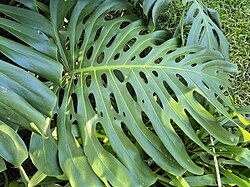

COMMUNITY OBSERVATION
Thai basil (Ocimum basilicum)
“The purple flower spikes stood out among the herbs in our garden.”
PEOPLE · PLANTS · PLACE
Local observations help build a richer picture of Malaysia’s plant life. Explore sample records from the WikiPlant community and learn how to share an observation responsibly.
WikiPlant uses a citizen science approach to invite people to document plants they encounter in forests, parks, gardens and other landscapes.
A clear photograph paired with a date, place and habitat note gives researchers useful context for reviewing an observation.
Respect the plant and its habitat. Photograph plants in place, avoid collecting or damaging them, and do not share precise locations for sensitive species.
COMMUNITY OBSERVATION
“The purple flower spikes stood out among the herbs in our garden.”

COMMUNITY OBSERVATION
“The leaves were fragrant, with a few small insect bites along the edges.”
Good observations are specific, respectful and easy for another person to review. Before submitting a record:
Leave the plant and its habitat as you found them.
Capture the whole plant, then close views of leaves, flowers or fruit.
Record the date, a suitable location and the habitat where it was growing.
| Record detail | Why it helps |
|---|---|
| Plant name | Helps connect the observation to a species record. |
| Date and habitat | Provides context for reviewing where and when it was observed. |
| Clear photograph | Shows the visible features used to review the plant. |
Every careful observation adds another perspective to the field guide. Select a contributor to see a sample plant record.
Ocimum basilicum
“The purple flower spikes stood out among the herbs in our garden.”
Explore plant records
Ocimum basilicum
“The leaves were fragrant, with a few small insect bites along the edges.”
Explore plant records
Swiss cheese plant
A sample plant record from the WikiPlant Explorer.
Explore species record